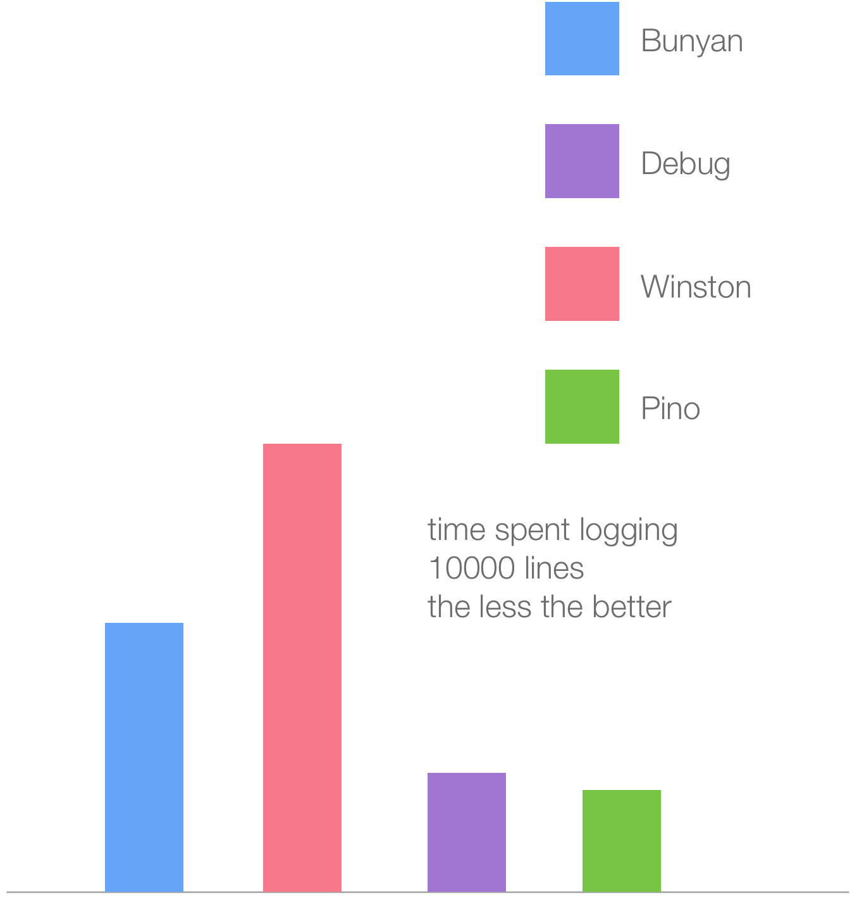

My Node.js Process is on Fire
by @matteocollina
ALARM
MAXIMUM NUMBER OF SERVERS REACHED
Number of servers increased, latency and response times are within boundaries
post-mortem
what happened?
How to fix?
- gather diagnostics data and evidence
- reproduce the problem in a non-prod live environment
- reproduce the problem in a synthethic way
- gather diagnostics data and evidence
- try a fix for the problem
- if not fixed, go back and try again
Fixing performance issues
- establish a measurable goal
- measure
- find the bottleneck
- optimize/fix
- measure
Establishing a
measurable Goal
My application must have a response time < 200ms at P99 with 100 concurrent requests per server
Latency and throughput
are connected
- Node.js is single threaded
- Multiple I/O actions in parallel
- In case of high I/O latency, we increase concurrency
- Higher latency and concurrency increase memory usage
- High memory usage increase GC activity
- GC activity costs precious CPU cycles to run
Measure

HTTP load tester
Trival cross platform installation
https://github.com/mcollina/autocannon
How do we find the bottleneck?
Diagnostics
github.com/nearform/node-clinic
Node Clinic
npm install clinic -g
clinic doctor -- node demo.js
clinic flame -- node demo.js
# more tools
clinic doctor
clinic doctor
$ clinic doctor -- node server.js
clinic flame
clinic flame
$ clinic flame -- node server.js
require('restify')
.createServer()
.get('/', function (req, res, next) {
sleep(30)
res.send({})
next()
}).listen(3000)
function sleep (ms) {
const future = Date.now() + ms
while (Date.now() < future);
}
0x version 4
- faster UI
- supports the V8 tick processor
- still support kernel tracing
- works on Windows!
- just released, check it out while it's hot!
Most code does not need to go

https://github.com/fastify/fastify
'use strict'
const fastify = require('fastify')()
fastify.get('/', function (req, reply) {
reply.send({ hello: 'world' })
})
fastify.listen(3000)

https://github.com/pinojs/pino
const pino = require('pino')()
pino.info('hello world')
pino.debug({
big: 'object'
}, 'with message')
2017 with Node 8.2+
Acknowledgements

The Team
This presentation
Thanks!

If you need help with Node.js, contact us